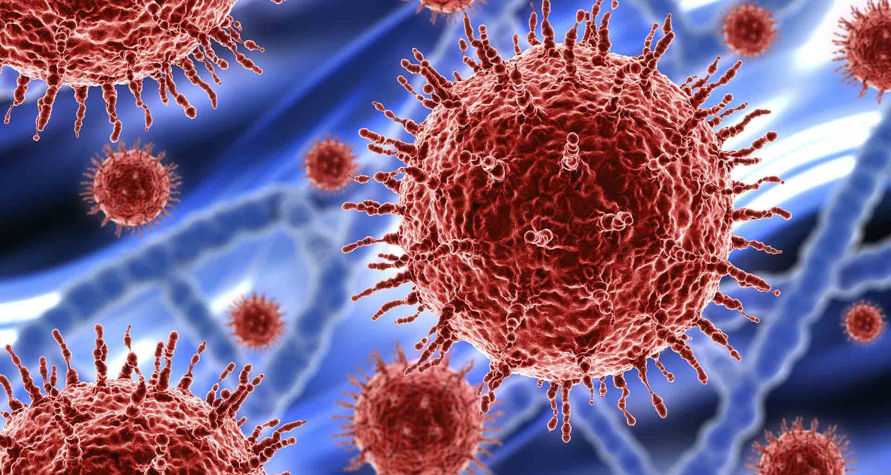
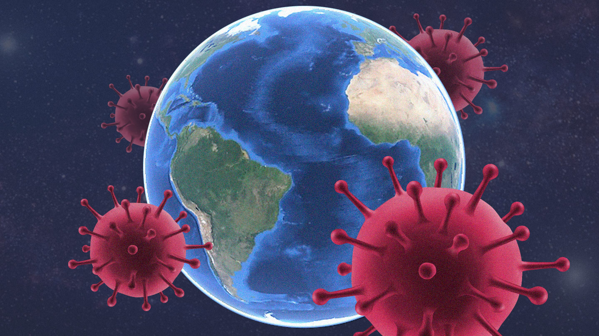
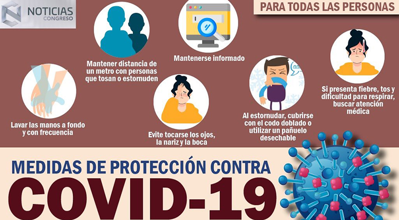
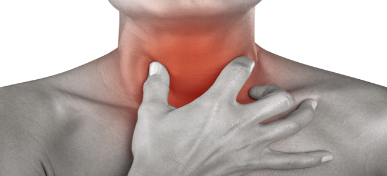
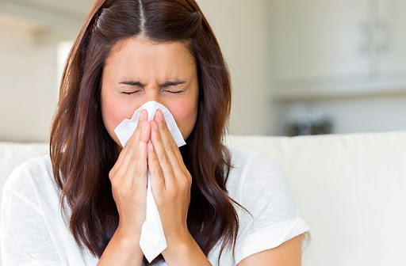
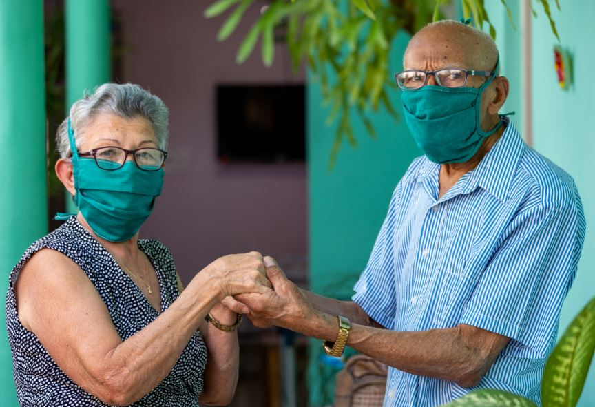
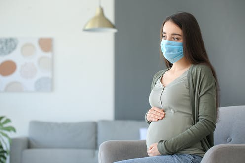
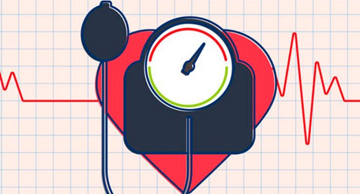

Coronavirus
- ¿Que es el coronavirus?
- Medidas de prevencion:
- ¿Cuales son sus sintomas?
- Qué hacer en caso de viajar a algún país o ciudad con un número considerable de casos confirmados:
- ¿A qué personas afecta más?
- ¿Qué hago si tengo síntomas?
Numero de Infectados.
¿Que es el coronavirus?
Los coronavirus son una familia de virus que circulan entre humanos y animales
(gatos, camellos, murciélagos). Se han descrito coronavirus que evolucionan y
desarrollan la capacidad de transmitirse de animales a humanos y propagarse entre
las personas.
El virus es genéticamente distinto de otros coronavirus, por lo que se considera
un nuevo virus. Las autoridades sanitarias de China publicaron el genoma completo
del “2019 Novel Coronavirus” o “2019- nCoV”. Varios coronavirus causan infecciones
respiratorias.
 
- Medidas de prevencion:
-
- Manténte al día de la información oficial.
- Lávate las manos con frecuencia.
- Mantén una distancia mínima de 1 metro entre cualquier persona que tosa o estornude.
- Evite tocarse los ojos, la nariz y la boca.
- Mantén una buena higiene de las vías respiratorias.
- Permanece en casa si no se encuentra bien de salud.
- Evita el contacto con personas enfermas.

¿Cuales son sus sintomas?
Los síntomas más comunes de la COVID-19 son fiebre,
cansancio y tos seca. Algunos pacientes pueden presentar dolores, congestión nasal,
rinorrea, dolor de garganta o diarrea. Estos síntomas suelen ser leves y aparecen de
forma gradual.
 
Algunas personas se infectan pero no desarrollan ningún síntoma y no se
encuentran mal. La mayoría de las personas (alrededor del 80%) se recupera de la enfermedad
sin necesidad de realizar ningún tratamiento especial.
- Qué hacer en caso de viajar a algún país o ciudad con un número considerable de casos confirmados:
-
- No existe una restricción de viaje a los países con un mayor número de casos confirmados de Covid-19; sin embargo, es necesario aplicar medidas preventivas si viajas a algunas de las áreas afectadas por el brote de neumonía.
- Ten tu esquema de vacunación al día de acuerdo con tu grupo de edad. Mantén y refuerza las medidas de prevención generales y de contacto para evitar enfermar, aún cuando no se conoce el agente causal.
- Si viajaste a algunos de los países con mayor número de casos confirmados y a tu regreso a México presentas signos y síntomas de la enfermedad, solicita atención médica inmediata y refiere tu antecedente de viaje.
¿A qué personas afecta más?
- Afecta a todas las personas, pero corren más riesgo:
-
- Las personas mayores.
- Las personas embarazadas.
- Las personas con alguna enfermedad previa como cáncer, diabetes o hipertensión.
  
- ¿Qué hago si tengo síntomas?
-
- Si presenta estos síntomas, puedes llamar a los siguientes teléfonos: 800 0044 800 o al 55 56 58 11 11.
- Considera que, si tienes esos síntomas, no necesariamente tienes COVID-19, podría ser sólo gripa.
- La mayoría de las personas que se contagien no desarrollarán la enfermedad y mejorarán por sí mismas. Pero aún así pueden transmitir el virus a las demás.
- Cuidarnos es también cuidar a las demás personas.